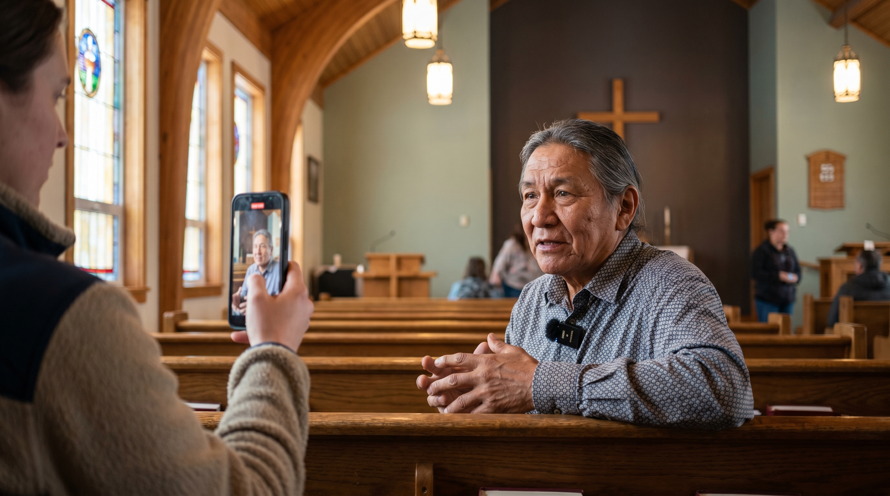

Almost every powerful video on the LIM site started the same way: a phone, a small mic, and someone who knew how to make the person in front of them feel safe enough to speak from the heart.
This guide walks you through every step — gear, setup, asking questions, capturing release permission, and getting the footage to Gary. Follow it and you'll cut editing time dramatically and end up with stories that actually move people.
The single biggest factor in whether a video makes it onto the site is sound quality. If viewers struggle to hear, they stop listening — no matter how powerful the story. Get the mic on the person, get close, and the rest gets easier.
People are moved by what feels real. A polished interview that sounds rehearsed will not change anyone's heart. An unscripted, honest moment captured with care — even on a phone — can change a donor's giving, bring a new participant to a healing group, or recruit a board member.
The good news: you don't need a film crew. You need a phone, a $40–$160 wireless mic, and the patience to listen. When the front-end capture is done right, the editing time on the back end drops by as much as 90%. When it's done poorly, no amount of post-production can save it.
"AI is really great, but it has to be grounded in authenticity and reality. It can only optimize what's there — the base has to be good."
— Gary Ricke, on the LIM video processThat's it. Two things. No tripods, no lighting kits, no professional cameras. The setup that consistently produces our best videos is just:
Two clip-on mics, plug-and-play with the iPhone, and the small fuzzy windscreen (the "wet cat") that keeps wind noise out when you're outside. Get this on every phone used for interviews. It is the single most important piece of equipment for capturing usable audio.
View on Amazon →You can spend more — there are excellent $160 sets too — but the goal is simple: get the mic onto the person speaking. A phone trying to capture audio from across the room, even a few feet away, is the #1 reason a beautiful interview becomes unusable.
Take 20 seconds to look at what's behind your subject. The background tells part of the story. A blank wall says nothing. Outside on a picnic table, by a river, inside a sanctuary, in a kitchen during fellowship — these all set a tone that helps the viewer feel where they are.
If your iPhone has cinematic mode, turn it on. It blurs the background just enough that the person becomes the total focus, but you still get a sense of place.
This one feels counter-intuitive, but trust it: when people see the questions in advance, they obsess. They write out answers. They rehearse. And then on camera they sound stiff and the magic is gone.
Your own question list is for you. Have it ready (we can use AI to generate strong, open-ended questions tied to the LIM mission), but keep it on your side of the conversation.
If you're filming one person, clip the lav mic to their collar and you're done. If you're capturing a group sharing during a healing session, rotate the mic — clip it onto each person right before they speak. It takes 30 seconds. It's worth it every single time. The mic feeds straight into your phone and won't interfere with any room amplification.
Almost everyone hates being interviewed. They hate how they look on camera. The most important skill you can develop is helping them forget the camera is there.
Before the real interview begins, say casually: "I just need to set my sound levels — tell me about your dog," or "tell me about your grandkids," or "what's the best meal you've eaten lately?" Pick something they'll light up talking about. You're not actually setting levels — you're warming them up. By the time you "start" the interview, they're already loose.
Most beginners stand too far away. Get close — closer than feels natural at first, like a personal conversation. When you're framed from the neck up, the viewer connects with the person's eyes and expressions, and the subject feels far less self-conscious about how their body looks.
Tell them: "Just talk to me. Don't worry about the phone." Then mean it. Lock in. Be genuinely interested. Smile with your eyes. Active listening is contagious — when they feel heard, they open up.
"You can't ask somebody to speak up and speak directly into the camera when they're speaking from their heart for the first time."
— Jaylene Peterson-NyrenThe biggest mistake most interviewers make is leading the witness — asking questions that telegraph the answer they want. People can feel that, and they freeze, or they try to please you instead of being honest.
This is the hardest part. While you're listening to their answer, you're also trying to come up with your next question. It's a real skill. The shortcut is genuine curiosity — when something they say catches your attention, ask about that. "Wait, say more about that part." "How did that feel?" "What happened next?"
If you're moved, say so. If you're impressed, say so. People can tell the difference between a real reaction and a polite one — and a real reaction is what makes them keep going.
You will hear the interview differently when you watch it back than when you were in it. Often what felt like a so-so interview turns out to be full of gold. So even if it doesn't feel amazing in the moment — keep going. Don't bail early.
Five to seven minutes of recorded conversation is the sweet spot. From a single 5–7 minute interview, we can usually pull three or four short clips for the website and social, plus a longer cut if it's exceptional.
Tell the person up front: "We're just going to talk for about five minutes. We're really good at editing, so don't worry if you stumble — we'll smooth it out. Just relax." That promise alone will help them.
Resist the urge to keep going past 7–8 minutes unless something extraordinary is happening. Long interviews are exhausting for the speaker and produce diminishing returns.
Before you part ways, write down (or voice-memo to yourself):
Tracking someone down later for a name spelling is painful and slow. Two minutes of notes now saves hours of back-and-forth later.
Before LIM can publish or share their video — even for internal training — we need their signed permission. We have an online release form that takes the person about 90 seconds to fill out from their phone.
The form lets them choose how their video may be used:
This distinction matters. Some participants are willing to share their story with the LIM staff and supporters but not with the world, and that's a perfectly valid choice we want to honor.
Text or email this link to the person you interviewed. They can sign it from their phone in under 2 minutes.
Open the Release Form →The signed releases are stored in Netlify's form dashboard. Jaylene or Gary can pull a record at any time.
The fastest, most reliable way to get a video from your iPhone to Gary is iCloud Link sharing. It's free, it doesn't require an Apple subscription, and it doesn't ask the recipient to log in to anything. Skip Google Drive — people consistently struggle with the upload step.
iCloud links expire after 30 days. Send the link as soon as the interview is done — don't let it sit on your phone for weeks.
Above all else, respect the dignity of the person you interviewed. This is the rule that overrides every other rule in this guide.
If they look uncomfortable, embarrassed, or unflattering on camera — even if what they said is brilliant — we cut it, or we re-frame it, or we re-shoot it. A great quote isn't worth making someone feel bad about how they appeared.
Every person who gives us their story deserves to see the final cut before it goes public. Tell them this up front: "Nobody will see this until you see it and sign off on it." That promise alone will help them relax during the interview.
"You have to respect the person's dignity above all else. If they're not looking great, then you might have to ask the question again, or you might have to do another interview."
— Gary RickeBefore you press record, run this list. It takes 2 minutes and prevents 90% of the problems we see.
← Back to Site
· Release Form
· LIM Staff Training · Restricted Access
Questions? Email gary.ricke@orbisdesign.com